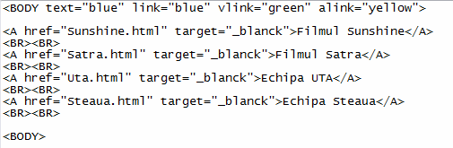

Culorile legaturilor
Legaturile pot avea la un moment dat una din urmatoarele stari:
- Legaturi nevizitate (link)
- Legaturi vizitate (vlink)
- Legaturi active in acel moment (alink)
Setarea culorilor legaturilor pentru fiecare dintre cele trei stari se realizeaza cu atribute ale
etichetei BODY. Aceste atribute sunt link, vlink si alink, fiecare dintre ele
avand drept valoare fie numele unei culori in limba engleza, fie codul hexazecimal al culorii in
sintaxa "#RRGGBB".
Iata un exemplu de utilizare ale celor trei atribute ale etichetei BODY. Observati culorile legaturilor
care sunt in diferite stari.

Filmul Sunshine
Filmul Satra
Echipa UTA
Echipa Steaua
Inapoi la Legaturi